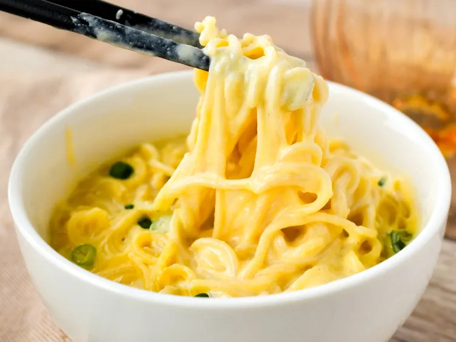

This recipe is quite the concoction but it is definitely worth the try. It has a good combination of flavors and brings the best out of both the foods. It is truly a unique recipe. Take caution when making it.
This recipe was copied from the recipe on the Allrecipes website. Please refer to that page for any questions regarding the recipe as well as additional suggestions.
Bring water to a boil in a large saucepan. Set seasoning packet aside; add noodles to water and boil for 3 minutes. Strain noodles in a colander and run under cold water to stop the cooking. Set aside.
To the saucepan add milk, cheese, and reserved seasoning packet. Cook over medium-high heat until cheese is melted and sauce has thickened, stirring often, about 3 minutes.
Turn heat off. Add noodles back to the saucepan. stir to combine.
Ladle into dishes to serve, and top with sliced green onion.